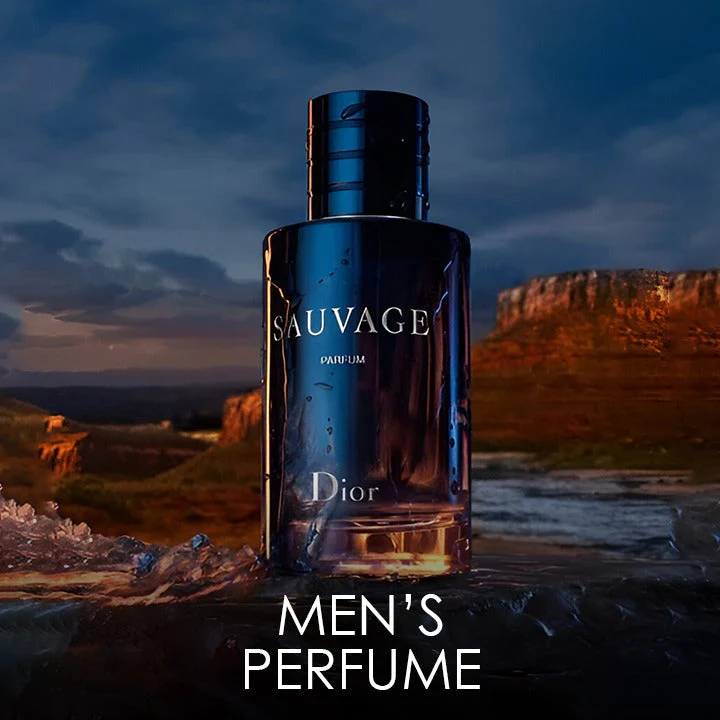
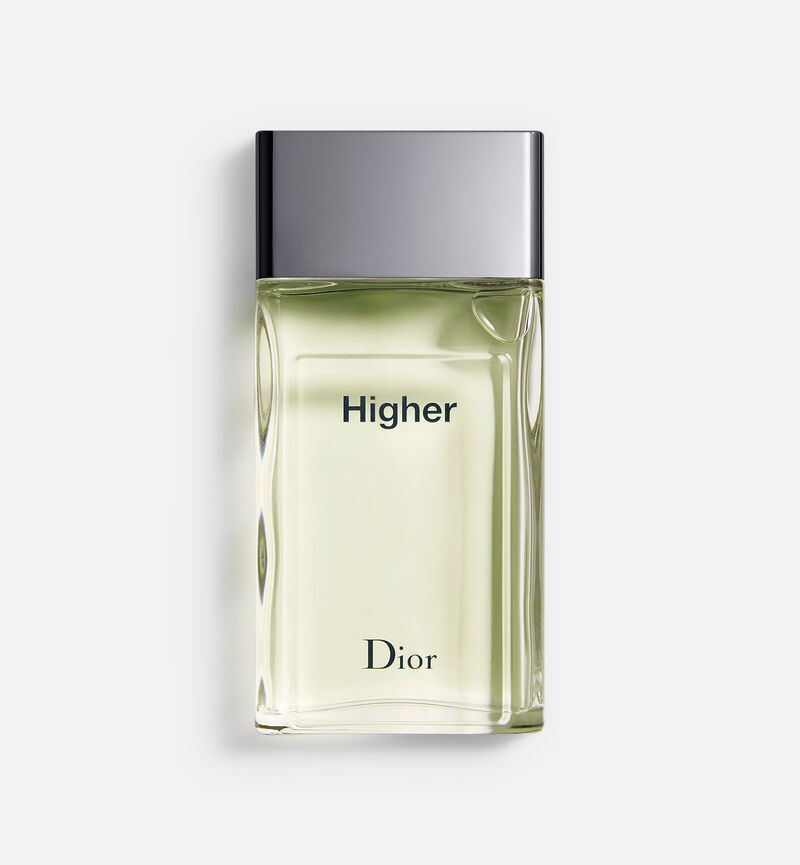

Dior Sauvage
Sauvage Eau de Parfum by Dior is a Oriental Fougere fragrance for men. Sauvage Eau de Parfum was launched in 2018. The nose behind this fragrance is François Demachy. Top note is Bergamot; middle notes are Sichuan Pepper, Lavender, Star Anise and Nutmeg; base notes are Ambroxan and Vanilla.
Intensity


Price: $119.99

Price: $119.99
Dior Higher
Sauvage Eau de Parfum by Dior is a Oriental Fougere fragrance for men. Sauvage Eau de Parfum was launched in 2018. The nose behind this fragrance is François Demachy. Top note is Bergamot; middle notes are Sichuan Pepper, Lavender, Star Anise and Nutmeg; base notes are Ambroxan and Vanilla.

Dior Fahrenheit
Sauvage Eau de Parfum by Dior is a Oriental Fougere fragrance for men. Sauvage Eau de Parfum was launched in 2018. The nose behind this fragrance is François Demachy. Top note is Bergamot; middle notes are Sichuan Pepper, Lavender, Star Anise and Nutmeg; base notes are Ambroxan and Vanilla.